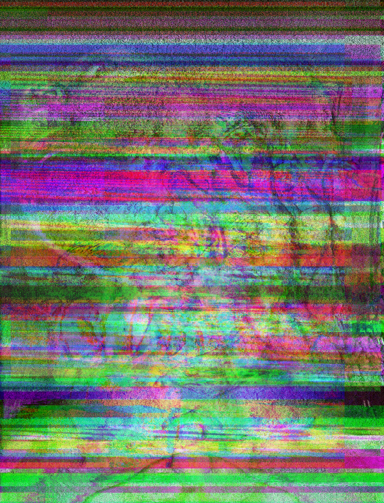

UNDERNEATH_MY_SKIN.jpeg
UNDERNEATH_MY_SKIN.jpeg is a glitched image of my persona's transformation. This persona is yet to have a name, but as it continues to expand and blossom, I grow more vulnerable. All of my flaws have unexpectedly grown into one being that cannot be contained by the shell of my perfectionism. This new self is beyond the layers of my skin, muscle, and bones. This self will only be bound by the digital world-the only surface on which I can express myself. It is a visual transformation beyond my physical anatomy; it is a rebirth of a new spirit with all of my flaws merged into one blossoming from my previous soul. It is made without any expectations and by exploiting unexpected glitches in media, it weaves itself in as a symbol of my flaws. Flaws that should celebrated and portrayed with integrity and beauty.